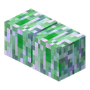
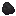
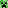

Кастрациякриперов
Пациент на столе, ножницы в руке. Ткнёшь пальцем, и он зашипит: полторы секунды, чтобы успеть.
Пациент
Обычный ванильный крипер до стола. Тяни шторку и смотри, что с ним стало после.
Операция
Весь протокол в четыре шага. Наркоза нет, ассистента тоже.
Крипер, в которого ударила молния, взрывается вдвое сильнее. Резать его страшнее, но с него падают Заряженные Яйца Крипера, а без них не собрать Супер-TNT.

1–2Яйца
Три предмета на одной модели. Крути мышкой. Съесть можно те, что лежат в хотбаре внизу экрана.
Кухня
Сырые яйца жарятся в печи за 10 секунд, в коптильне вдвое быстрее. Уголь тут бесконечный.

∞Насыщение считается как еда × множитель × 2. Жареные яйца по сытости ровно как стейк.
Статуя Крипера
Крипер, который уже никогда не рванёт, потому что каменный. Смотрит туда, куда ставишь.
Супер-TNT
Восемь TNT вокруг заряженных яиц. Рвёт в пять раз сильнее обычного, потом сушит всю воду вокруг и зовёт десять молний.
Полигон
Разрез местности: озеро, деревья, мобы. Честные лучи ванильного взрыва, потом осушка и молнии, как в коде. Сравни с обычным TNT.
Вагонетка с Супер-TNT
Внутри едет целый блок Супер-TNT. Разгонишь сильнее, рванёт сильнее: к силе 20 прибавляется до двух за каждый блок скорости в тик.
Креатив
Вкладка ZitraksMode, всё из этого пункта. Клик кладёт предмет в хотбар. Ачивки за «получить в инвентарь» засчитываются и отсюда, как в игре.

ZitraksMode · №10Правила
Достижения
Скрытые, как в игре: пока не получишь, не видно, что это. Вся ветка целиком живёт в общем древе мода на главной.
История
Уже не страшно. Можно ткнуть.